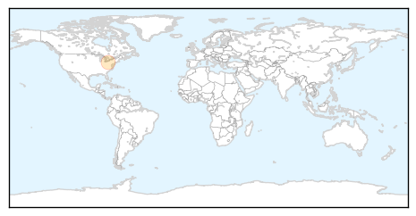
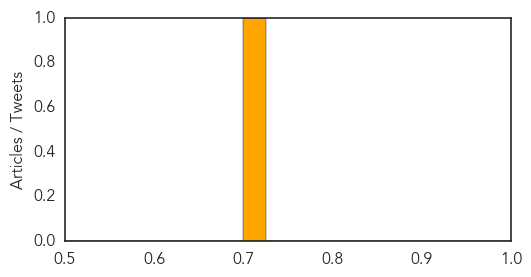

West Nile Virus
30-Day Web Trend
4 alerts, 4 warnings
30-Day Twitter Trend
0 alerts, 0 warnings

Article Locations
Article Confidences
Top Articles:
Top Tweets:
-
No tweets found for May 05, 2015
Pertussis
30-Day Web Trend
4 alerts, 0 warnings

30-Day Twitter Trend
0 alerts, 0 warnings

Article Locations

Article Confidences

Top Articles:
Top Tweets:
-
No tweets found for May 05, 2015